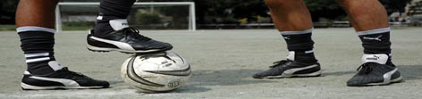

|
Saturday September 3rd will see the long-awaited start of TML season 3 and the season will kick off with what promises to be a spirited game between the Swiss Kickers and France FC at Oifuto. The 1st and 2nd divisions are in fact shaping up slightly differently from the standings at the end of season 2. This is due to the fact that recently promoted Yokota United have military duties that prevent them from committing to playing 1st division football, sadly Yokota United will not be participating in the TML this season. This means that the 1st division promotion spot has been awarded to season 2, 2nd division runners-up Nova FC, who accepted the late promotion and are looking forward to a challenging season ahead under the new name of 'Shogun Knights' - yes puns intended!
The organizers of TML hope that this coming season will see a lot of great football played, loads of goals scored and more and more teams drinking together at our sponsor pubs after games and at the weekends generally. We'll keep you in the loop about all the latest TML news, fixtures, parties and events, via our upcoming newsletter and we hope that the network of TML members will continue to expand putting our footballing community clearly on the map.

That said, the two unsavory incidents towards the end of last season, both of which involved 'violent conduct' and one of which escalated to include a heated exchange after the match, which led to one player feeling racially slurred (in an international football league, regardless of semantics, the merest hint of racism (intended or otherwise) is intolerable) and the other feeling deeply insulted following a needless post-match tirade, we hope will remain a thing of the past. However, for the season ahead, a TML committee has been formed comprising TML managers, captains and referees, to adjudicate serious incidents should a team captain/manager feel it's necessary. Hopefully, the services of the TML committee won't need to be employed, because for the best part, the 24 teams in the league all play their football in a very good spirit - enthusiastic, passionate, but fair and without malice - reflecting the leagues own philosophy.
There's always a shortage of available grounds in the Kanto area and thankfully a few TML members have gone to their local ward offices to see if they can secure grounds and in some cases have been successful. Others have volunteered their services in attending the Oifuto lottery, the more bodies we can get there, the higher the chance of booking grounds. If you can help us to help you, it'd be truly appreciated. One other shortage we're facing this season is referees. Our boys in black are in short supply, so if anyone knows any referees Japanese or foreign, do let us know, or if you think you have a sound grasp of the game and can mince around the pitch in a manner similar to referee Pietro, we'd like to hear from you. On all counts: grounds, Oifuto lottery and referres, if you can help in any way get in touch with us at: info@footyjapan.com
The TML website wouldn't be much of a read without teams contributing match reports. Do keep submitting your reports and at the end-of-season party next year we'll be awarding a prize for the "best match report" - had we awarded a prize last season it would've surely gone to YCAC's Damian Hart who many believe will be the next J. K. Rowling. We all expect match reports to be a tad biased, that's half the fun of reading them - especially when we can read a report from both the teams who played, however, the TML site won't carry stories that will exacerbate incidents that took place during matches, or create feuds between team, in short the publishing of, or linking to stories is at our discretion. The teams themselves, however, are free to publish stories on their own sites as they feel fit.
A lot of great football is waiting to be played in the season ahead and a lot of new players will be debuting over the coming weeks. The league is growing and standards are rising - it's an exciting time to be playing football in this league. TML's founding principles were those of cooperation, friendship and community and these principles are just as relevant now as they were back when TML was just a pipe-dream. See you on the pitch.
TML
|